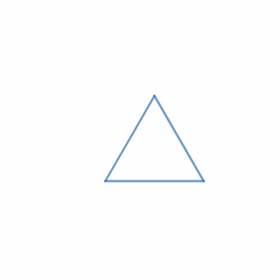

Triangle Rotation
Triangle Rotation
Start with an equilateral triangle $\Delta_1$ of unit side length. Given a function $f(n)$, build $\Delta_{n+1}$ from $\Delta_n$ as follows: extend each side of $\Delta_n$ clockwise until its new length is $f(n)$ times the original, then join the three new endpoints to form $\Delta_{n+1}$.
The animation below shows the construction for the constant $f(x) = 2$:

So the blue triangle is $\Delta_n$, the red one is $\Delta_{n+1}$, and the ratio $\tfrac{\text{blue} + \text{orange}}{\text{blue}} = f(n)$ determines how far each side gets extended.
Now take
$$f(n) = \frac{2\sqrt{3}\,n^{2} - 1}{2\sqrt{3}\,n^{2} - 3}.$$
What is the total angle (in radians) by which $\Delta_n$ has rotated, relative to $\Delta_1$, as $n \to \infty$?
Solution
Let $\theta_n$ be the rotation angle at step $n$. Applying the sine rule to the small "extension" triangle formed by one side of $\Delta_n$, the corresponding side of $\Delta_{n+1}$, and the extended segment gives
$$\frac{f(n)}{f(n) - 1} = \frac{\sin(60^\circ - \theta_n)}{\sin \theta_n}.$$
Plugging in the given $f(n)$, the left side simplifies to $\tfrac{2\sqrt{3} n^{2} - 1}{2}$, while the right side simplifies (via $\tfrac{\sin(A-B)}{\sin A \sin B} = \cot B - \cot A$) to $\tfrac{\sqrt{3}}{2} \cot \theta_n - \tfrac{1}{2}$. Equating gives $\cot \theta_n = 2 n^{2}$, so $\theta_n = \arctan\!\left(\tfrac{1}{2 n^{2}}\right)$.
The total rotation is
$$\sum_{n=1}^{\infty} \arctan\!\left(\frac{1}{2 n^{2}}\right) = \sum_{n=1}^{\infty} \arctan\!\left(\frac{(2n+1) - (2n-1)}{1 + (2n+1)(2n-1)}\right),$$
which telescopes to $\arctan(\infty) - \arctan(1) = \tfrac{\pi}{2} - \tfrac{\pi}{4} = \tfrac{\pi}{4}$.
Answer: $\dfrac{\pi}{4} \approx 0.7854$
Notes
—